Chapter 5.1: Areas and Distances
The Area Problem
begin by attempting to solve the area problem: Find the area of the region S that lies under the curve y = f(x) from a to b. This means that S, illustrated in Figure 1, is bounded by the graph of a continuous function f [where f(x) \ge 0], the vertical lines x = a and x = b, and the x-axis.

In trying to solve the area problem we have to ask ourselves: What is the meaning of the word area? This question is easy to answer for regions with straight sides. For a rectangle, the area is defined as the product of the length and the width. The area of a triangle is half the base times the height. The area of a polygon is found by dividing it into triangles (as in Figure 2) and adding the areas of the triangles.
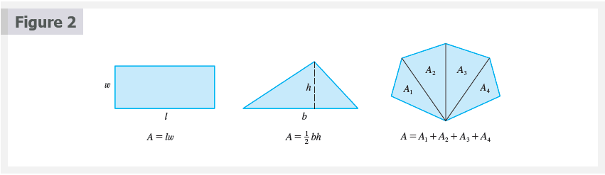  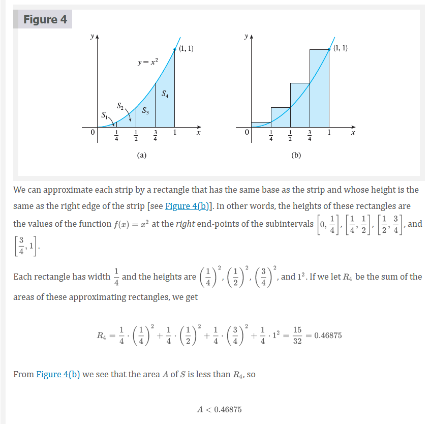
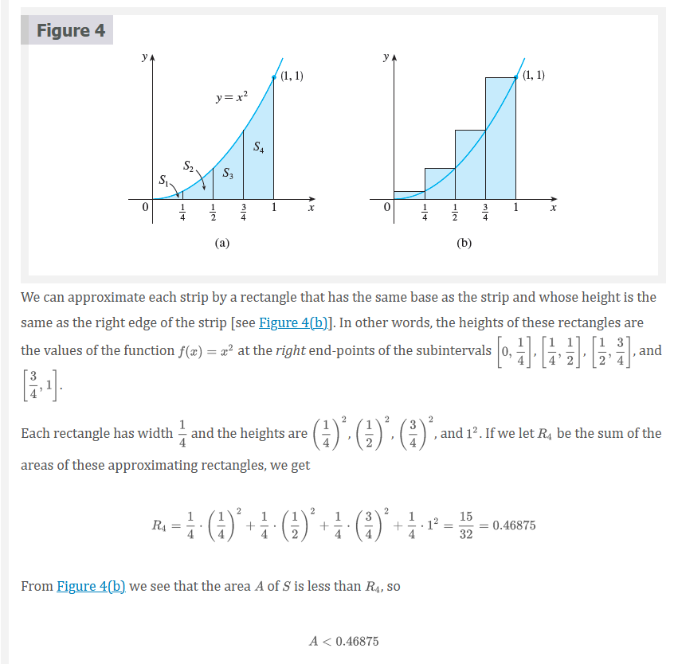 


 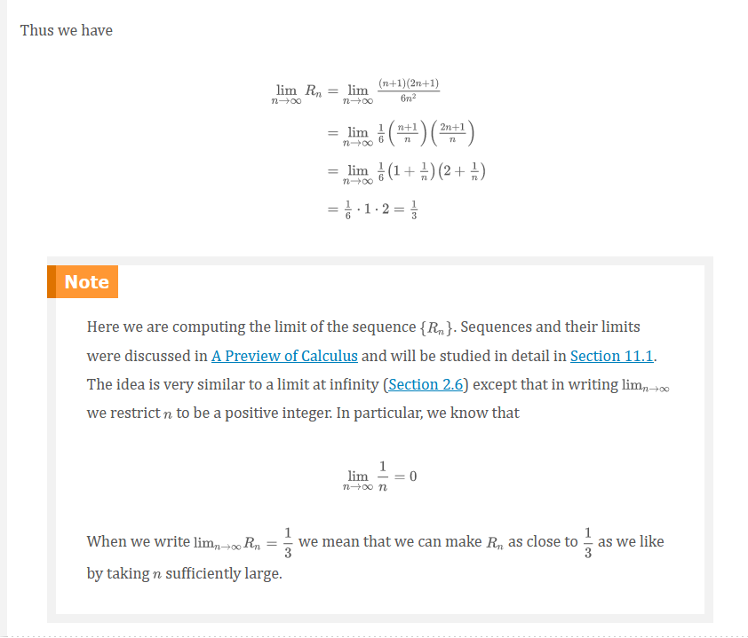
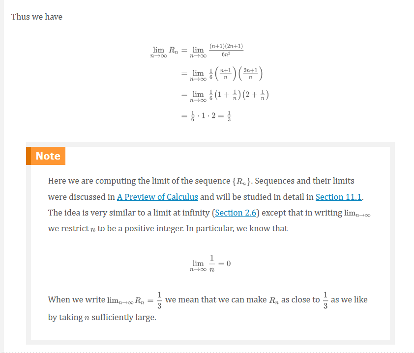
It can be shown that the lower approximating sums also approach \frac{1}{3}, that is,
\lim_{n \to \infty}L_{n} = \frac{1}{3}
From Figures 8 and 9 it appears that, as n increases, both L_{n} and R_{n} become better and better approximations to the area of S. Therefore we define the area A to be the limit of the sums of the areas of the approximating rectangles, that is,
A = \lim_{n \to \infty}R_{n} = \lim_{n \to \infty}L_{n} = \frac{1}{3}
 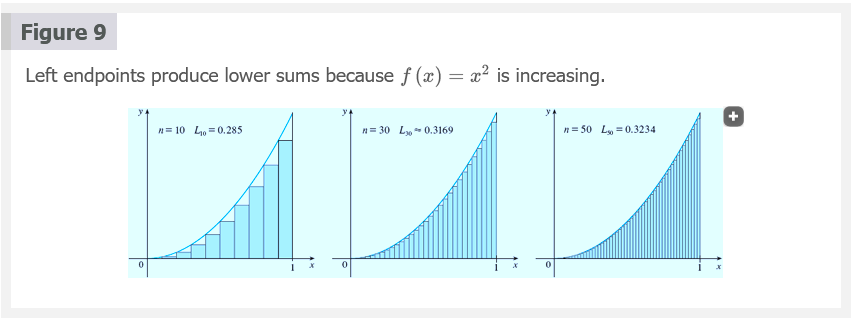 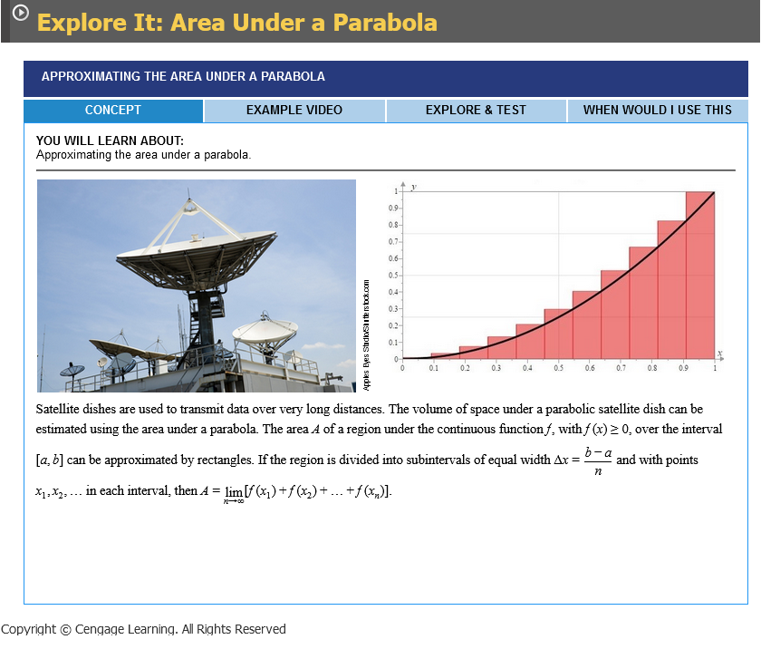
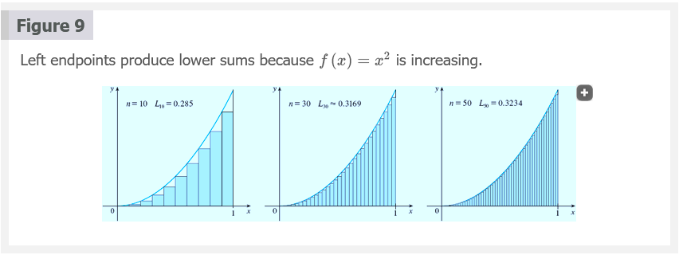 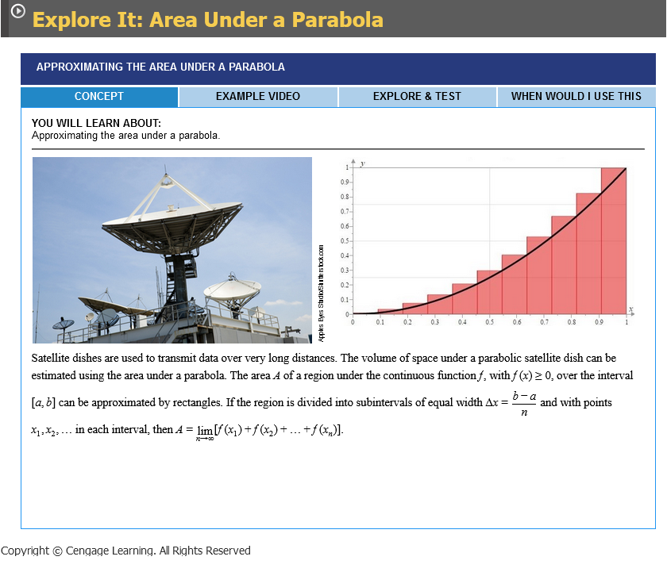
Let’s apply the idea of Examples 1 and 2 to the more general region S of Figure 1. We start by subdividing S into n strips S_{1}, S_{2},\ldots,S_{n} of equal width as in Figure 10.
The width of the interval [a, b] is b - a, so the width of each of the n strips is
\Delta{x} = \frac{b - a}{n}
These strips divide the interval [a, b] into n subintervals
[x_{0}, x_{1}],[x_{1}, x_{2}],[x_{2}, x_{3}],\ldots,[x_{n - 1}, x_{n}]
Where x_{0} = a and x_{n} = b. The right endpoints of the subintervals are
\begin{aligned} x_{1} &= a + \Delta{x} \\ x_{2} &= a + 2\Delta{x} \\ x_{3} &= a + 3\Delta{x} \\ &\vdots \end{aligned}
Let’s approximate the ith strip S_{i} by a rectangle with width \Delta{x} and height f(x_{i}), which is the value of f at the right endpoint (see Figure 11). Then the area of the ith rectangle is f(x_{i})\Delta{x}. What we think of intuitively as the area of S is approximated by the sum of the areas of these rectangles, which is
R_{n} = f(x_{1})\Delta{x} + f(x_{2})\Delta{x}+ \cdots +f(x_{n})\Delta{x}
Figure 12 shows this approximation for n = 2, 4, 8, and 12. Notice that this approximation appears to become better and better as the number of strips increases, that is, as n \to \infty. Therefore we define the area A of the region S in the following way.
Definition 2
The area A of the region S that lies under the graph of the continuous function f is the limit of the sum of the areas of approximating rectangles:
A = \lim_{n \to \infty}R_{n} = \lim_{n \to \infty}[f(x_{1})\Delta{x} + f(x_{2})\Delta{x} + \cdots + f(x_{n})\Delta{x}]
It can be proved that the limit in Definition 2 always exists, since we are assuming that f is continuous. It can also be shown that we get the same value if we use left endpoints:
Definition 3
A = \lim_{n \to \infty}L_{n} = \lim_{n \to \infty}[f(x_{0})\Delta{x} + f(x_{1}) + \cdots + f(x_{n - 1}\Delta{x})]
In fact, instead of using left endpoints or right endpoints, we could take the height of the ith rectangle to be the value of f at any number x_{1}^{*} in the ith subinterval [x_{i - 1}, x_{i}] We call the numbers x^{*}_{1}, x_{2}^{*},\cdots, x_{n}^{*} the sample points. Figure 13 shows approximating rectangles when the sample points are not chosen to be endpoints. So a more general expression for the area of S is
Definition 4
A = \lim_{n \to \infty} [f(x_{1}^{*})\Delta{x} + f(x_{2}^{*})\Delta{x} + \cdots +(x_{n}^{*})\Delta{x}]
 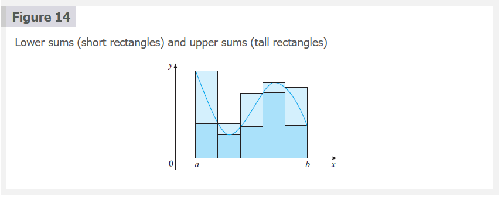
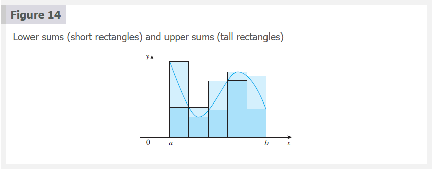
We often use sigma notation to write sums with many terms more compactly. For instance,
\sum_{i = 1}^{n} f(x_{i})\Delta{x} = f(x_{1})\Delta{x} + f(x_{2})\Delta{x} + \cdots + f(x_{n})\Delta{x}

So the expressions for area in Equations 2, 3, and 4 can be written as follows:
\begin{aligned} A &= \lim_{n \to \infty} \sum_{i = 1}^{n} f(x_{i})\Delta{x} \\ A &= \lim_{n \to \infty} \sum_{i = 1}^{n} f(x_{i - 1}\Delta{x}) \\ A &= \lim_{n \to \infty} \sum_{i = 1}^{n} f(x_{1}^{*})\Delta{x} \end{aligned}
We can also rewrite Formula 1 in the following way:
\sum_{i = 1}^{n} i^{2} = \frac{n(n + 1)(2n + 1)}{6}
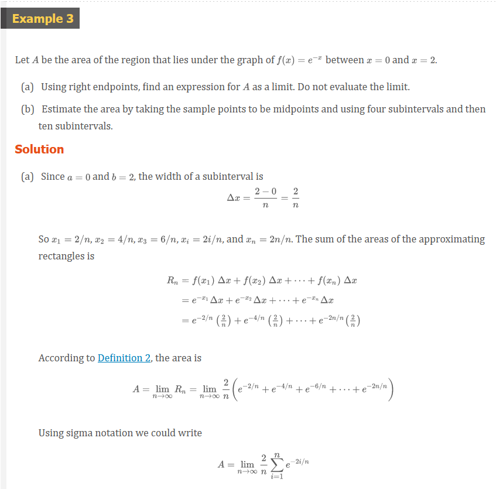  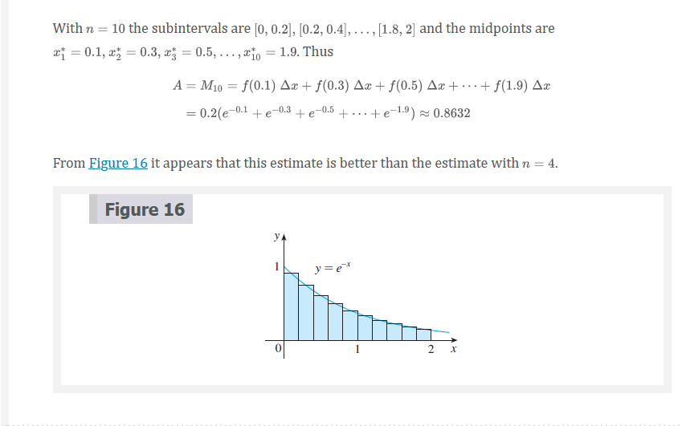
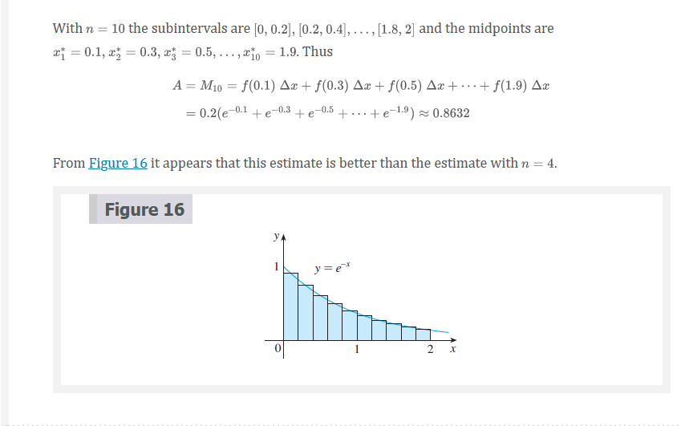
The Distance Problem
Now let’s consider the distance problem: Find the distance traveled by an object during a certain time period if the velocity of the object is known at all times. (In a sense this is the inverse problem of the velocity problem that we discussed in Section 2.1.) If the velocity remains constant, then the distance problem is easy to solve by means of the formula
\text{ distance } = \text{ velocity } \times \text{ time }
But if the velocity varies, it’s not so easy to find the distance traveled. We investigate the problem in the following example.
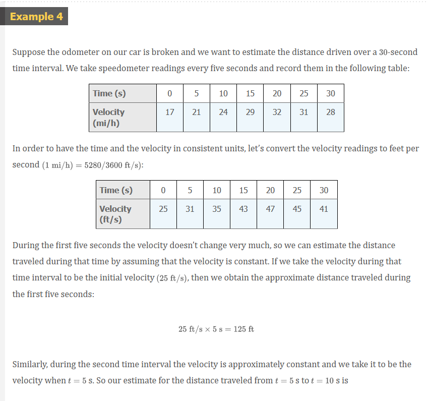 
Perhaps the calculations in Example 4 remind you of the sums we used earlier to estimate areas. The similarity is explained when we sketch a graph of the velocity function of the car in Figure 17 and draw rectangles whose heights are the initial velocities for each time interval. The area of the first rectangle is $25 = 125$, which is also our estimate for the distance traveled in the first five seconds. In fact, the area of each rectangle can be interpreted as a distance because the height represents velocity and the width represents time. The sum of the areas of the rectangles in Figure 17 is L_{6} = 1130, which is our initial estimate for the total distance traveled.
In general, suppose an object moves with velocity v = f(t), where a \le t \le b and f(t) \ge 0 (so the object always moves in the positive direction). We take velocity readings at times t_{0}(=a), t_{1}, t_{2},\cdots t_{n}so that the velocity is approximately constant on each subinterval. If these times are equally spaced, then the time between consecutive readings is \Delta{t} = (b - a)/n. During the first time interval the velocity is approximately f(t_{0}) and so the distance traveled is approximately f(t_{0})\Delta{t}. Similarly, the distance traveled during the second time interval is about f(t_{1})\Delta{t} and the total distance traveled during the time interval [a, b] is approximately
f(t_{0})\Delta{t} + f(t_{1})\Delta{t} + \cdots + f(t_{n - 1})\Delta{t} = \sum_{i = 1}^{n} f(t_{i - 1})\Delta{t}
If we use the velocity at right endpoints instead of left endpoints, our estimate for the total distance becomes
f(t_{1})\Delta{t} + f(t_{2})\Delta{t} + \cdots + f(t_{n})\Delta{t} \sum_{i = 1}^{n} f(t_{i})\Delta{t}
The more frequently we measure the velocity, the more accurate our estimates become, so it seems plausible that the exact distance d traveled is the limit of such expressions:
Definition 5
d = \lim_{n \to \infty} \sum_{i = 1}^{n} f(t_{i - 1})\Delta{t} = \lim_{n \to \infty} \sum_{i = 1}^{n} f(t_{i})\Delta{t}
Video Lectures
- 📺 Introduction to integral calculus
- 📺 Definite integrals intro
- 📄 Exploring accumulation of change
- 📺 Worked example: accumulation of change
- 📺 Riemann approximation introduction
- 📺 Over- and under-estimation of Riemann sums
- 📄 Left & right Riemann sums
- 📺 Worked example: finding a Riemann sum using a table
- 📺 Worked example: over- and under-estimation of Riemann sums
- 📺 Midpoint sums
- 📺 Trapezoidal sums
- 📄 Understanding the trapezoidal rule
- 📄 Riemann sums review
Resources
- 📺 Introduction to integral calculus
- 📺 Definite integrals intro
- 📄 Exploring accumulation of change
- 📺 Worked example: accumulation of change
- 📺 Riemann approximation introduction
- 📺 Over- and under-estimation of Riemann sums
- 📄 Left & right Riemann sums
- 📺 Worked example: finding a Riemann sum using a table
- 📺 Worked example: over- and under-estimation of Riemann sums
- 📺 Midpoint sums
- 📺 Trapezoidal sums
- 📄 Understanding the trapezoidal rule
- 📄 Riemann sums review
Textbook